Day Option · I
Nature
Pull up to Mechelse Heide, walk a heath loop, then ride the 294 m heath-bridge before dinner.
A 30 km arc of Belgian Limburg · Heath, terril, watermill
Each pin is a postcard further down. Slagmolen is the zero — everything else is reachable inside an hour.
Day Option · I
Pull up to Mechelse Heide, walk a heath loop, then ride the 294 m heath-bridge before dinner.
Day Option · II
Bokrijk open-air museum in the morning, then climb the 60 m headframe at C-Mine.
Day Option · III
Studio-100 indoor chaos at Plopsa Hasselt then sand-beach at Kelchterhoef.
Day Option · IV
Maasmechelen Village outlet, then dissolve at Elaisa before the dinner reservation.

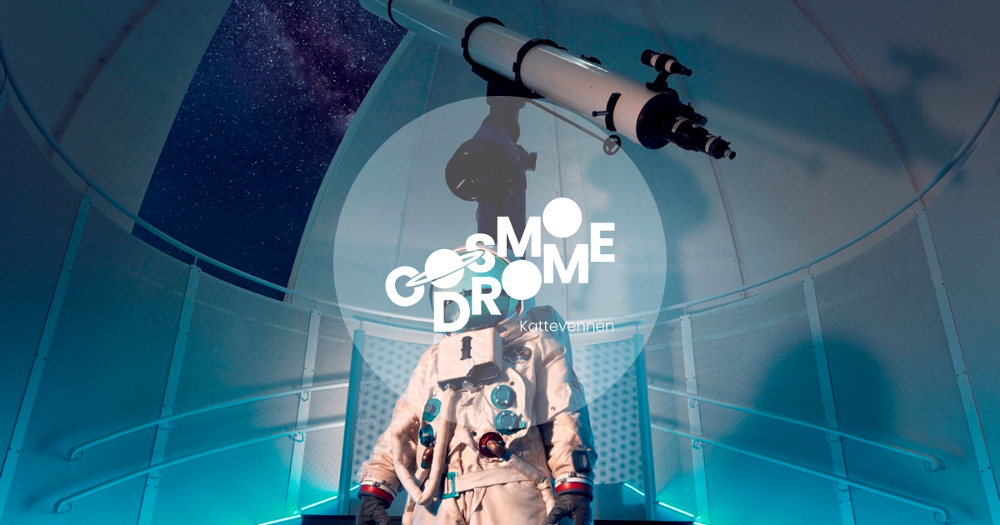
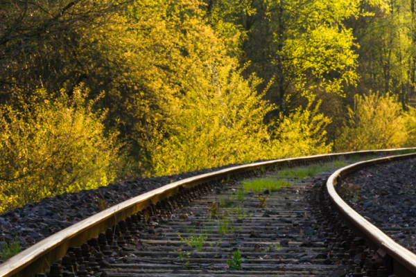
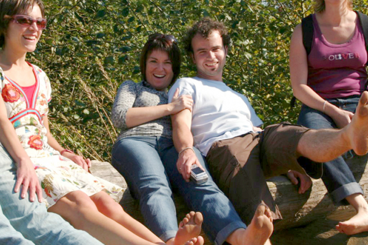
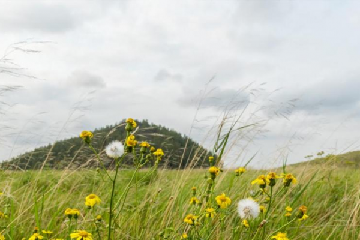
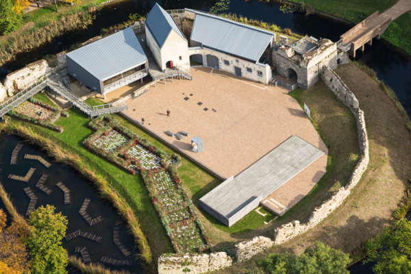
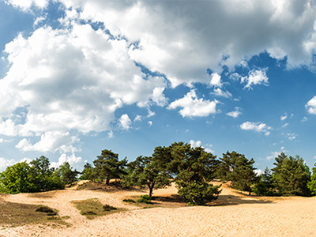
Limburg's signature elevated cycle structures — the single most-photographed cycling thing in Flanders.
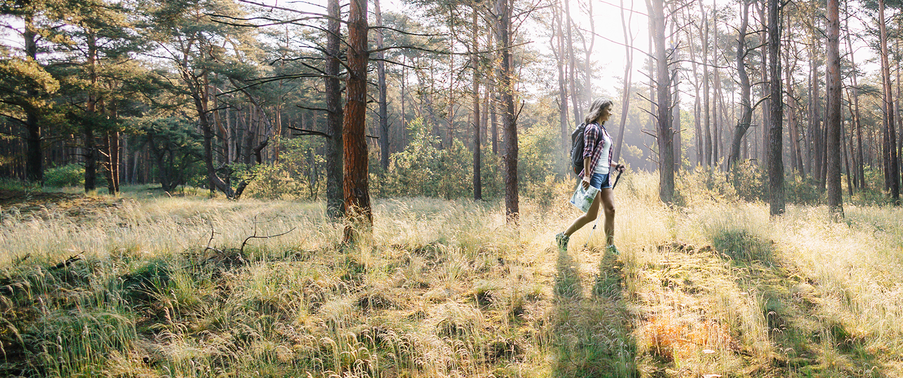
Three clusters: Genk (closest, two flagships), Hasselt (edge of arc, three museums), Maaseik (Mosan river town).

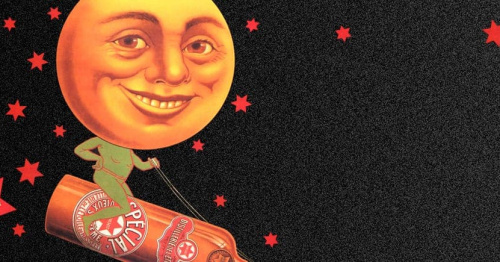
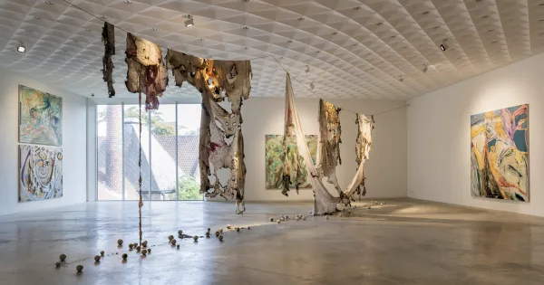

A rainy-day flagship, a sandy-beach lake, and a barefoot trail half an hour away.
Five postcards — two breweries, a winery already pinned in chapter III, a Bicester outlet, the Terhills spa, and a backup Michelin.
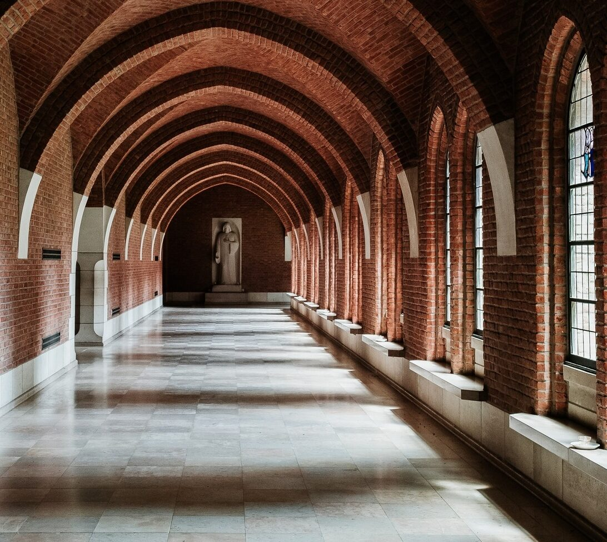
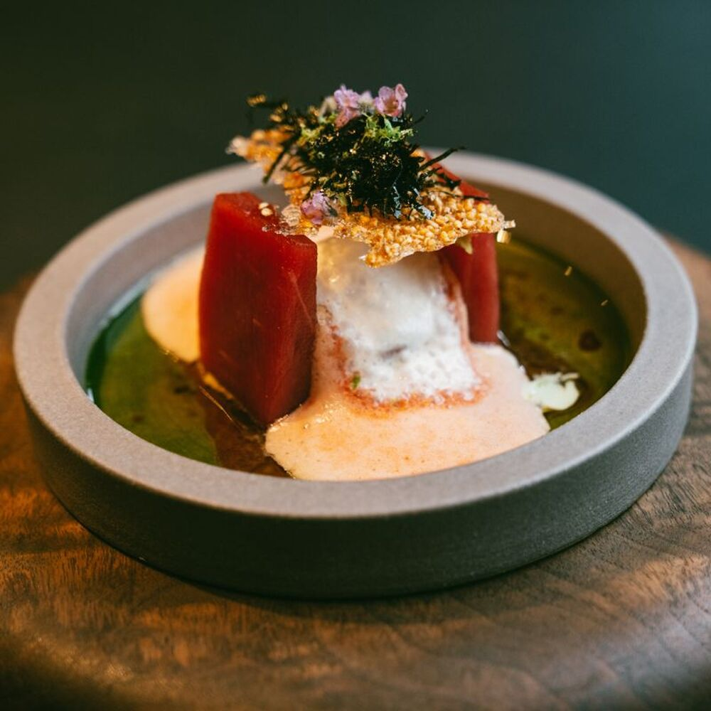
· Plopsaqua Hasselt — frequently listed, does not exist. Belgium's Plopsaqua waterparks are at De Panne and Hannut-Landen only.
· Klimcentrum Bleau is in Ghent, not Genk. Don't drive east looking for it.
· Thermae 2000 Valkenburg shows up on every spa list. From Slagmolen it's ~40-45 km — a half-day commitment, not a stop on the way to dinner [84].
· Lommelse Sahara sits just outside the 30 km arc at ~44 km — beautiful, worth it on a separate day [59].
— stamp two postcards together, leave dinner-clean by 18:30 —